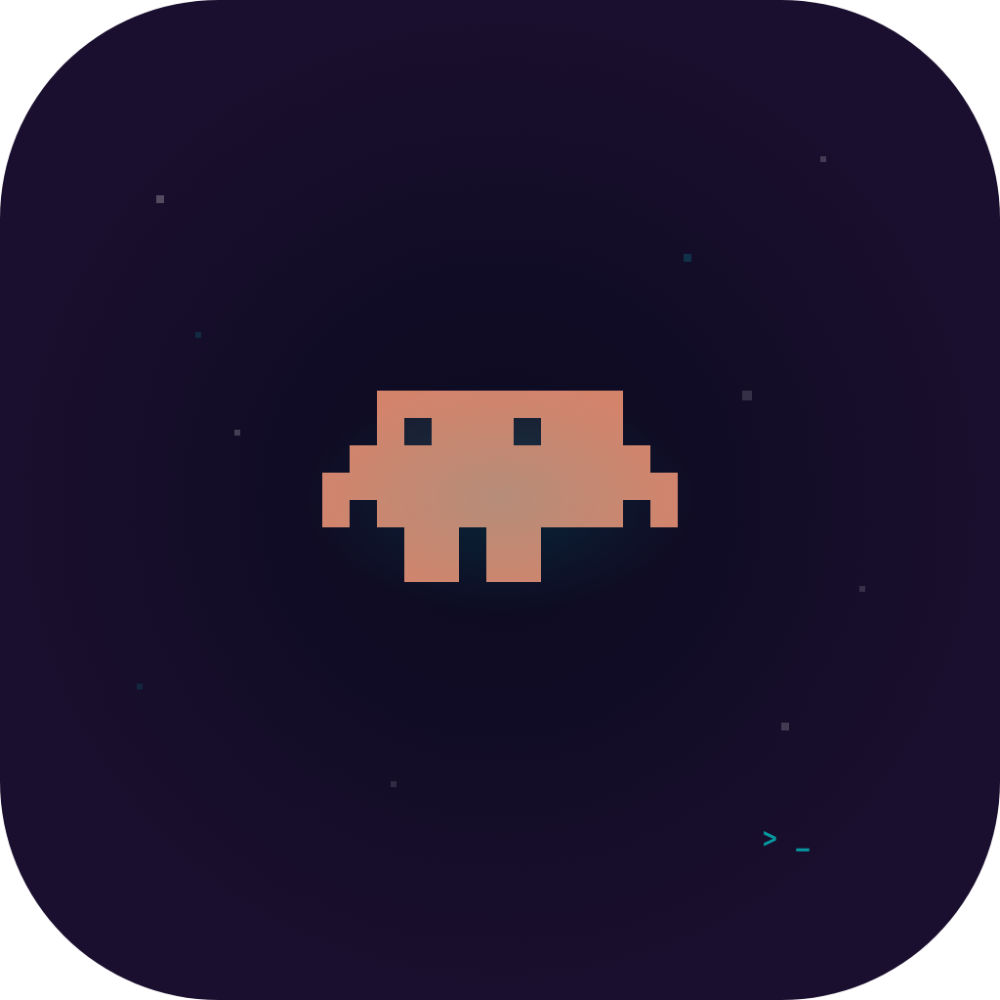

Live session tracking
Every running Claude Code session at a glance — status, current tool, and project, all in the island.

Code IslandStay in flow while your agents keep working. Approve permissions, answer questions, track rate limits, and jump back to your terminal — right from the notch on macOS, or a floating island on Ubuntu.
Every session. One glance.
A live recreation — watch it expand, approve, and collapse.
Built on Claude Code hooks — no API keys, no accounts, no telemetry. Everything runs on your machine.
Everything your agents need from you, surfaced where you're already looking.
Every running Claude Code session at a glance — status, current tool, and project, all in the island.
Deny, Allow once, Allow-all, or Bypass — with a diff/command preview, without switching windows.
Respond to AskUserQuestion prompts with pill buttons and multi-select, right inline.
See Claude's reply the moment a task completes, then it auto-dismisses and gets out of your way.
Live 5-hour and 7-day usage bars with warn/critical colors, so you never hit a wall unaware.
Click a session to raise the exact terminal or IDE running it — gnome-terminal, JetBrains, VS Code, iTerm2 and more.
Synthesized square/triangle/saw chimes for every event — per-event toggles, zero audio files.
Run a dozen agents — their permissions and questions queue up and surface one after another.
No cloud, no accounts, no telemetry. It talks to Claude Code over a local socket and nothing else.
Code Island rides Claude Code's hook system — no wrappers, no proxies.
Claude Code emits events — SessionStart, PreToolUse, PermissionRequest, Stop — as you work.
A tiny CLI detects which terminal/IDE you're in and forwards the event over a local Unix socket.
The app updates the notch — status, permissions, questions, rate limits — in real time.
Your click flows straight back to Claude Code as the decision. Stay in your editor the whole time.
The same dashboard, shaped to each desktop.
Pure Swift · SwiftUI + AppKit
Electron + TypeScript
Free and open source. Build from source and the hooks install themselves.
$ git clone https://github.com/fauzannadhif/code-island-ubuntu
$ cd code-island-ubuntu/linux
$ npm install
$ npm start # builds + launches the island
# start a Claude Code session and the island comes alive ✦On macOS, grab the app from the repository and launch it — onboarding installs the hooks for you.
Yes — Code Island is free and open source for personal, non-commercial use. There are no accounts, subscriptions, or in-app purchases.
No. Code Island talks to Claude Code over a local Unix socket only. There's no cloud backend, no analytics, and no telemetry.
On macOS: iTerm2, Ghostty, Terminal.app, VS Code/Cursor, and JetBrains IDEs. On Ubuntu/Wayland: gnome-terminal and JetBrains IDEs via the Window Calls GNOME extension (wmctrl/xdotool on X11).
It registers standard Claude Code hooks in ~/.claude/settings.json on first launch (idempotent). Each hook calls a small bridge that forwards the event to the app.
On macOS a notch looks best, but non-notch Macs get a hover strip. On Ubuntu there's no notch at all — the island floats at the top-center of your screen.
Code Island is an independent, open-source project inspired by Vibe Island. It focuses on Claude Code and brings the idea to Linux.
Free, open source, and local. Your move.